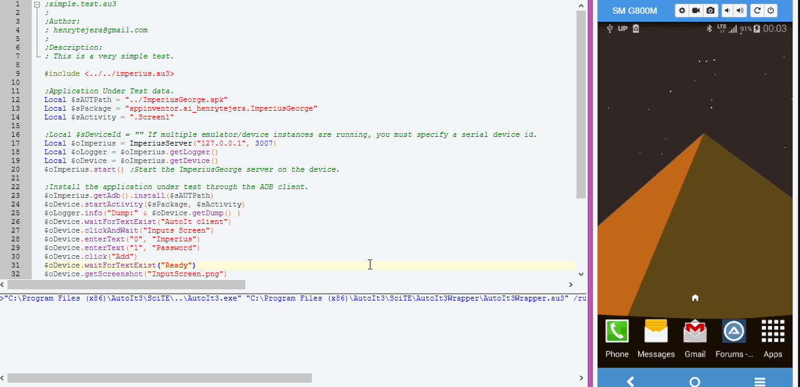
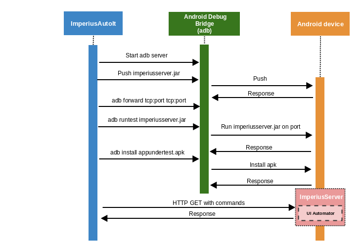
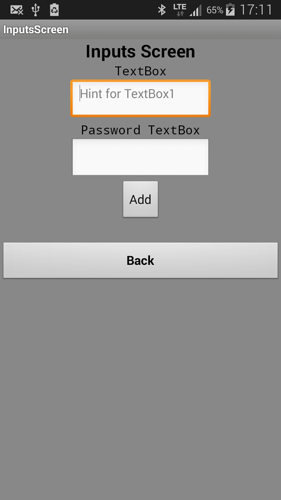

Imperius AutoIt
Imperius AutoIt is an ImperiusGeorge client for mobile test automation that support native Android apps. Tests are written using AutoIt, that's it!
Getting started
Prerequisites
- 1. Latest Android-SDK must be installed and ANDROID_HOME set. If detailed instructions are needed, have a look at this guide.
- 2. Connect a physical Android device or start an emulator. After connecting the device to the computer, make sure to enable USB debugging.
- 3. Please make sure the device has no screen lock configured.
- 4. ImperiusGeorge works on Android 4.1+, so before using it, make sure your device is Android4.1+
Application under test
- You shouldn’t have to modify your app in any way in order to automate it.
- If you want to play around with Imperius AutoIt, you can use our ImperiusGeorge.apk. You will need allow apps to install from unknown sources on device settings.
Writing a simple test
Download the latest version and navigate to the folder where you downloaded Imperius AutoIt and create the mytest.au3 file with this content and run the script:
#include <imperius.au3>
Local $sAUTPath = "ImperiusGeorge.apk"
Local $sPackage = "appinventor.ai_henrytejera.ImperiusGeorge"
Local $sActivity = ".Screen1"
;Local $sDeviceId = "" If multiple emulator/device instances are running, you must specify a serial device id.
Local $oImperius = ImperiusServer("127.0.0.1", 3007)
Local $oLogger = $oImperius.getLogger(); This object allows you to log messages to the STDOUT stream and on a file, with different log levels.
Local $oDevice = $oImperius.getDevice(); UiDevice provides access to state information about the device and simulate user actions.
$oImperius.start() ;Start a HTTP server (ImperiusGeorge) on the device, on port 3007.
$oImperius.getAdb().install($sAUTPath) ;Install the application under test through the ADB client.
$oDevice.startActivity($sPackage, $sActivity) ;Start the app under test.
$oLogger.info("Dump:" & $oDevice.getDump() )
$oDevice.waitForTextExist("AutoIt client")
$oDevice.clickAndWait("Inputs Screen")
$oDevice.enterText("0", "Imperius")
$oDevice.enterText("1", "Password")
$oDevice.click("Add")
$oDevice.waitForTextExist("Ready")
$oDevice.getScreenshot("InputScreen.png")
$oDevice.pressBack()
$oDevice.click("Back")
$oDevice.clearPackage($sPackage)
$oImperius.getAdb().uninstall($sPackage)
$oImperius.stop()
$oImperius = 0Let's look at the execution of this script on a real device:

You might want to take a closer look at the script you are executing. This is the execution log:
[2016-12-03 00:06:06.636 INFO ] [ADB] Run command:adb start-server. Result:
[2016-12-03 00:06:06.714 INFO ] [ADB] Run command:adb shell "if [ -e \"/data/local/tmp/imperiusserver.1.0.1.jar\" ]; then echo \"Found\"; else echo \"Not Found\"; fi". Result:Found
[2016-12-03 00:06:06.764 INFO ] [ADB] Run command:adb push "C:\imperius\examples\simple\imperiusserver.1.0.1.jar" "/data/local/tmp/imperiusserver.1.0.1.jar".
[2016-12-03 00:06:06.812 INFO ] [ADB] Run command:adb forward tcp:3007 tcp:3007. Result:
[2016-12-03 00:06:07.870 INFO ] [ADB] Run command:adb shell "uiautomator runtest imperiusserver.1.0.1.jar -c imperiusgeorge.TestServer -e port 3007". Result:INSTRUMENTATION_STATUS: numtests=1
INSTRUMENTATION_STATUS: stream=
imperiusgeorge.TestServer:
INSTRUMENTATION_STATUS: id=UiAutomatorTestRunner
INSTRUMENTATION_STATUS: test=testAndroidServer
INSTRUMENTATION_STATUS: class=imperiusgeorge.TestServer
INSTRUMENTATION_STATUS: current=1
INSTRUMENTATION_STATUS_CODE: 1
[2016-12-03 00:06:14.196 INFO ] [ADB] Run command:adb install "../ImperiusGeorge.apk". Result: pkg: /data/local/tmp/ImperiusGeorge.apk
Success
4882 KB/s (1775940 bytes in 0.355s)
[2016-12-03 00:06:15.561 INFO ] [UiDevice] URL: http://127.0.0.1:3007/execute?on=imperiusgeorge.UIHelp&method=shell&args=["am start appinventor.ai_henrytejera.ImperiusGeorge/.Screen1"] Response: "Starting: Intent { act=android.intent.action.MAIN cat=[android.intent.category.LAUNCHER] cmp=appinventor.ai_henrytejera.ImperiusGeorge\/.Screen1 }\n"
[2016-12-03 00:06:18.319 INFO ] [UiDevice] URL: http://127.0.0.1:3007/dump Response: {"pkg":"","buttons":["Inputs Screen","Spinner Screen","List picker Screen","Time picker Screen"],"activity_name":null,"screenshot_location":"\/sdcard\/2016-12-03_00-03-31.png","logs":"[\"Starting server on port 3007\",\"parsing args-string: [\\\"am start appinventor.ai_henrytejera.ImperiusGeorge\\\/.Screen1\\\"] became: [\\\"am start appinventor.ai_henrytejera.ImperiusGeorge\\\\\\\/.Screen1\\\"]\",\"running method 'shell' on static class class imperiusgeorge.UIHelp\",\"returning Starting: Intent { act=android.intent.action.MAIN cat=[android.intent.category.LAUNCHER] cmp=appinventor.ai_henrytejera.ImperiusGeorge\\\/.Screen1 }\\n of package java.lang\",\"Creating dump of views\"]","text_views":["ImperiusGeorge","ImperiusGeorge","AutoIt client"]}
[2016-12-03 00:06:18.320 INFO ] Dump:{"pkg":"","buttons":["Inputs Screen","Spinner Screen","List picker Screen","Time picker Screen"],"activity_name":null,"screenshot_location":"\/sdcard\/2016-12-03_00-03-31.png","logs":"[\"Starting server on port 3007\",\"parsing args-string: [\\\"am start appinventor.ai_henrytejera.ImperiusGeorge\\\/.Screen1\\\"] became: [\\\"am start appinventor.ai_henrytejera.ImperiusGeorge\\\\\\\/.Screen1\\\"]\",\"running method 'shell' on static class class imperiusgeorge.UIHelp\",\"returning Starting: Intent { act=android.intent.action.MAIN cat=[android.intent.category.LAUNCHER] cmp=appinventor.ai_henrytejera.ImperiusGeorge\\\/.Screen1 }\\n of package java.lang\",\"Creating dump of views\"]","text_views":["ImperiusGeorge","ImperiusGeorge","AutoIt client"]}
[2016-12-03 00:06:18.389 INFO ] [UiDevice] URL: http://127.0.0.1:3007/execute?on=imperiusgeorge.UIHelp&method=waitUntilExactTextExists&args=[["AutoIt client"], 30000] Response: "AutoIt client"
[2016-12-03 00:06:19.233 INFO ] [UiDevice] URL: http://127.0.0.1:3007/execute?on=imperiusgeorge.UIHelp&method=clickAndWaitForNewWindow&args=["Inputs Screen"] Response: ""
[2016-12-03 00:06:23.318 INFO ] [UiDevice] URL: http://127.0.0.1:3007/execute?on=imperiusgeorge.UIHelp&method=enterText&args=[0, "Imperius"] Response: ""
[2016-12-03 00:06:27.249 INFO ] [UiDevice] URL: http://127.0.0.1:3007/execute?on=imperiusgeorge.UIHelp&method=enterText&args=[1, "Password"] Response: ""
[2016-12-03 00:06:30.943 INFO ] [UiDevice] URL: http://127.0.0.1:3007/execute?on=imperiusgeorge.UIHelp&method=clickIfExactExists&args=["Add"] Response: true
[2016-12-03 00:06:31.038 INFO ] [UiDevice] URL: http://127.0.0.1:3007/execute?on=imperiusgeorge.UIHelp&method=waitUntilExactTextExists&args=[["Ready"], 30000] Response: "Ready"
[2016-12-03 00:06:32.028 INFO ] [UiDevice] URL: http://127.0.0.1:3007/execute?on=imperiusgeorge.UIHelp&method=getScreenshot&args=[] Response: "\/sdcard\/2016-12-03_00-03-47.png"
[2016-12-03 00:06:32.117 INFO ] [ADB] Run command:adb pull "/sdcard/2016-12-03_00-03-47.png" "InputScreen.png". Result:2919 KB/s (119645 bytes in 0.040s)
[2016-12-03 00:06:32.191 INFO ] [UiDevice] URL: http://127.0.0.1:3007/execute?on=imperiusgeorge.UIHelp&method=shell&args=["rm /sdcard/2016-12-03_00-03-47.png"] Response: ""
[2016-12-03 00:06:33.198 INFO ] [UiDevice] URL: http://127.0.0.1:3007/execute?on=imperiusgeorge.UIHelp&method=shell&args=["input keyevent 4"] Response: ""
[2016-12-03 00:06:36.869 INFO ] [UiDevice] URL: http://127.0.0.1:3007/execute?on=imperiusgeorge.UIHelp&method=clickIfExactExists&args=["Back"] Response: true
[2016-12-03 00:06:38.098 INFO ] [UiDevice] URL: http://127.0.0.1:3007/execute?on=imperiusgeorge.UIHelp&method=shell&args=["pm clear appinventor.ai_henrytejera.ImperiusGeorge"] Response: ""
[2016-12-03 00:06:40.934 INFO ] [ADB] Run command:adb uninstall appinventor.ai_henrytejera.ImperiusGeorge. Result:SuccessHow it Works
Client/Server Architecture
ImperiusGeorge is a Web Server that exposes a HTTP API. It receives connections from the AutoIt client, listens for commands, executes those commands on a mobile device, and responds with an HTTP response representing the result of the command execution.
ImperiusGeorge proxies commands to a UIAutomator test case running on the device. UIAutomator is Android’s native end-to-end automation framework which supports running test cases directly in to the device.
You can get more information about how ImperiusGeorge works here.
This sequence diagram shows how ImperiusAutoIt interact with adb, ImperiusGeorge server and the Android device.

Android Debug Bridge (adb) UDF
The adb is a versatile command line tool that lets you communicate with an emulator instance or connected Android device.
Imperius AutoIt has an Android UDF based upon this UDF.
This UDF is mainly targeted to communicate with Android devices in an automated fashion, such as in automated testing. An ADB client implemented in pure AutoIt is coming for the next release of Imperuis AutoIt. Check this great documentation about how adb works.
A more complex example
This test show the Page Object pattern in order to minimize code duplication, make tests more readable, reduce the cost of modification, and improve maintainability. Page Object is an automation pattern commonly used in automation. It is used to mitigate the fact that ent-to-end automation tests are often involved in races with the App Under Test they are testing.
#include <imperius.au3>
#include <dashboardScreen.au3>
#include <inputsScreen.au3>
;Application Under Test data.
Local $sAUTPath = "ImperiusGeorge.apk"
Local $sPackage = "appinventor.ai_henrytejera.ImperiusGeorge"
Local $sActivity = ".Screen1"
;Local $sDeviceId = "" If multiple emulator/device instances are running, you must specify a serial device id.
Local $oImperius = ImperiusServer("127.0.0.1", 3007)
Local $oLogger = $oImperius.getLogger()
Local $oDevice = $oImperius.getDevice()
$oImperius.start() ;Start the ImperiusGeorge server on the device.
;Install the application under test through the ADB client.
$oImperius.getAdb().install($sAUTPath)
$oDevice.startActivity($sPackage, $sActivity)
Local $oDashboardScreen = DashboardScreen($oDevice)
$oDashboardScreen.waitForScreen()
Local $oInputsScreen = $oDashboardScreen.pressInputsScreen()
With $oInputsScreen
.writeName("Imperius")
.writePassword("Password")
.pressAdd()
.waitForReady()
.back()
EndWith
$oDevice.clearPackage($sPackage)
$oImperius.getAdb().uninstall($sPackage)
$oImperius.stop()
$oImperius = 0
Page Object
The Page Object pattern intends creating an object for each screen of the App Under Test. By following this pattern a layer of separation between the test code and technical implementation is created.
The inputsScreen look like this:

and the code look like this:
#include <imperius.au3>
;Function: InputsScreen
;
;Parameters:
; $oDevice- Object. An UiDevice instance.
;
;Returns:
; Object. An InputsScreen instance.
Func InputsScreen($oDevice)
Local $oClassObject = _AutoItObject_Class()
$oClassObject.Create()
;Methods
With $oClassObject
.AddMethod("writeName", "_WriteName")
.AddMethod("writePassword", "_WritePassword")
.AddMethod("pressAdd", "_PressAdd")
.AddMethod("back", "_Back")
.AddMethod("waitForReady", "_WaitForReady")
EndWith
;Properties
With $oClassObject
.AddProperty("oDevice", $ELSCOPE_PRIVATE, $oDevice)
.AddProperty("inputName", $ELSCOPE_PRIVATE, 0)
.AddProperty("inputPassword", $ELSCOPE_PRIVATE, 1)
.AddProperty("buttonAdd", $ELSCOPE_PRIVATE, "Add")
.AddProperty("buttonBack", $ELSCOPE_PRIVATE, "Back")
.AddProperty("textReady", $ELSCOPE_PRIVATE, "Ready")
EndWith
Return $oClassObject.Object
EndFunc ;==>InputsScreen
#Region Methods
;Function: _WriteName
;Enter the given text in the "Name" input.
;
;Parameters:
; $oSelf - Object reference.
; $sName - String. The name.
Func _WriteName($oSelf, $sName)
$oSelf.oDevice.enterText($oSelf.inputName, $sName)
EndFunc ;==>_WriteName
;Function: _WritePassword
;Enter the given text in the "Password" input.
;
;Parameters:
; $oSelf - Object reference.
; $sPassword - String. The password.
Func _WritePassword($oSelf, $sPassword)
$oSelf.oDevice.enterText($oSelf.inputPassword, $sPassword)
EndFunc ;==>_WritePassword
;Function: _PressAdd
;Presses the Add button.
;
;Parameters:
; $oSelf - Object reference.
Func _PressAdd($oSelf)
$oSelf.oDevice.click($oSelf.buttonAdd)
EndFunc ;==>_PressAdd
;Function: _Back
;Presses the Back button.
;
;Parameters:
; $oSelf - Object reference.
;
;Returns:
; Object. A DashboardScreen instance.
Func _Back($oSelf)
$oSelf.oDevice.click($oSelf.buttonBack)
Return DashboardScreen($oSelf.oDevice)
EndFunc ;==>_Back
;Function: _WaitForReady
;
;Parameters:
; $oSelf - Object reference.
Func _WaitForReady($oSelf)
$oSelf.oDevice.waitForTextExist($oSelf.textReady)
EndFunc ;==>_WaitForReady
#EndRegion Methods
Logging
ImperiusAutoIt has a simple logger UDF based upon this UDF. Extensive logging can help you get to the bottom of execution issues, especially in circumstances where additional information is hard to get.
Logger exposes six log levels: TRACE, DEBUG , INFO, WARNING , ERROR and FATAL.
The default logging level is INFO. This means that only log entries with the logging level INFO and higher are output.
#include <imperius.au3>
Local $oLogger = Logger()
$oLogger.trace("TRACE")
$oLogger.debug("DEBUG")
$oLogger.info("INFO")
$oLogger.warn("WARN")
$oLogger.error("ERROR")
$oLogger.fatal("FATAL")
$oLogger.setLevel($LOG_WARN);If you want to change the logging level, set the new level equivalent to the level you want to log.
$oLogger.info("INFO")
$oLogger.warn("WARNW")
Local $sDeviceId = "12345"
Local $oImperius = ImperiusServer("127.0.0.1", 3007, $sDeviceId)
Local $oLogger2 = $oImperius.getLogger() ;Gets the logger object from ImperiusServer.
$oLogger2.info("INFO")
Local $oLogger3 = Logger("MyFile.log")
$oLogger3.info("INFO")
Basic Usages
This section show the normal actions of the device through some simple examples. This section is light on details, you can find a more detailed explanation about each function by reading the API documentation.
Retrieve the device info
#include <imperius.au3>
;Local $sDeviceId = "" If multiple emulator/device instances are running, you must specify a serial device id.
Local $oImperius = ImperiusServer("127.0.0.1", 3007)
Local $oLogger = $oImperius.getLogger()
Local $oDevice = $oImperius.getDevice()
$oImperius.start() ;Start the ImperiusGeorge server on the device.
$oLogger.info("Dump: " & $oDevice.getDump() )
$oLogger.info("Top Activity: " & $oDevice.getCurrentTopActivity())
$oLogger.info("Activity Name: " & $oDevice.getActivityName())
$oLogger.info("Device Name: " & $oDevice.getDeviceName())
$oLogger.info("Device Version: " & $oDevice.getDeviceVersion())
$oLogger.info("Device Manufacturer: " & $oDevice.getDeviceManufacturer())
$oLogger.info("Device Model: " & $oDevice.getDeviceModel())
$oLogger.info("Packages: " & $oDevice.getPackages()[0])
$oDevice.getScreenshot("screen.png")
$oImperius.stop()
$oImperius = 0
Press hard/soft key
You can find all key code definitions at android.keys.constants.au3.
#include <imperius.au3>
;Local $sDeviceId = "" If multiple emulator/device instances are running, you must specify a serial device id.
Local $oImperius = ImperiusServer("127.0.0.1", 3007)
Local $oLogger = $oImperius.getLogger()
Local $oDevice = $oImperius.getDevice()
$oImperius.start() ;Start the ImperiusGeorge server on the device.
With $oDevice
.pressBack()
.pressHome()
.pressTab()
.pressAppMenu()
.pressEnter()
.sendKeyEvents($KEYCODE_CAMERA)
EndWith
$oImperius.stop()
$oImperius = 0
Micro - The AutoIt Unit Testing Framework
Micro is a Unit Testing Framework with a focus on being easy to use. It allows you to write test functions and test suites. A wide range of assertions are supported.
This is a very simple test that use Micro Unit Testing Framework.
#include <imperius.au3>
#Region AUTData
Local $sAUTPath = "ImperiusGeorge.apk"
Local $sPackage = "appinventor.ai_henrytejera.ImperiusGeorge"
Local $sActivity = ".Screen1"
#EndRegion AUTData
#Region BeforeAfter
Func BeforeSuite($oServer, $sAppPath, $sPackage)
Local $oAdb = $oServer.getAdb()
With $oAdb
.uninstall($sPackage)
.install($sAppPath)
EndWith
EndFunc ;==>BeforeSuite
#EndRegion BeforeAfter
#Region Suite
Local $oImperius = ImperiusServer("127.0.0.1", 3007)
Local $oDevice = $oImperius.getDevice()
$oImperius.start()
BeforeSuite($oImperius, $sAUTPath, $sPackage)
Local $oTestSuite = newTestSuite("Suite")
$oTestSuite.addTest(TestInputScreen($oDevice))
$oTestSuite.finish()
$oImperius.stop()
$oImperius = 0
#EndRegion Suite
#Region Tests
Func TestInputScreen($oDevice)
Local $oTest = newTest("Test InputScreen")
Local $sExpected = "Ready"
With $oDevice
.startActivity($sPackage, $sActivity)
.waitForTextExist("AutoIt client")
.clickAndWait("Inputs Screen")
.enterText("0", "Imperius")
.enterText("1", "Password")
.click("Add")
.getScreenshot("InputScreen.png")
EndWith
$oTest.assertTrue("Assert that the [" & $sExpected & "] text is present on the screen", $oDevice.waitForTextExist($sExpected))
Return $oTest
EndFunc ;==>TestInputScreen
#EndRegion Tests
This test generate this result report on STDOUT. You always have the name of the function being executed a report at the end, with number of executed test and number of errors (if any).
(1) Test InputScreen
+ PASS Assert that the [Ready] text is present on the screen
API Docs
ImperiusAutoIt API documentation is build with Natural Docs. Natural Docs is an open-source documentation generator for multiple programming languages. Natural Docs scans your code and builds high-quality HTML documentation from it.
Contribution Guidelines
You may contribute to Imperius AutoIt by reporting bugs, fixing reported bugs or developing new features.
Learning AutoIt
If you are entirely new to AutoIt, you may want to learn a bit about the language. The default source of information about the language for AutoIt newcomers is the oficial AutoIt site. Once you have grasped the basics, you may want to familiarize yourself also with AutoItObject, the UDF that ImperiusAutoIt is built on.
Report a Bug or feature request
Bugs or feature requests should be reported using GitHub issues. Some issues on github are marked with label enhancement. Feel free to pick up such tasks and implement them.
Code Style
Here are the highlights for what we expect in the ImperiusAutoIt code:
- 1. Be tidied. Just hit Ctrl+T from SciTE.
- 2. Pass Au3Check with no errors.
- 3. After the dollar sign
(“$”), from which the declaration of a variable starts, there must be a symbol or a set of symbols that defines what type of data it will contain.
Comments
- 1. Comments should be valid US-English sentences: they should start with a capital letter and end with appropriate punctuation.
- 2. The specification of a field or member should be documented using this specification in order to generate documentation through Natural Docs.
Natural Docs has two files called Languages.txt one in its Config directory, and one in your project directory. These control the language, index prefix, and prototype features of Natural Docs. Copy the AutoIt comments format specification use in this project into your Languages.txt
Language: AutoIt
Extension: au3
Line Comment: ;
Enum Values: Under type
Function Prototype Ender: \n
Variable Prototype Enders: \n =
Line Extender: _
Here’s a quick example of how to document your code for Natural Docs:
;Function: _Adb_Install
;Pushes an Android application (specified as a full path to an .apk file) to an emulator/device.
;
;Parameters:
; $oSelf - Object reference.
; $sFilePath - String. The full path to the .apk file.
; $iMode - String. 1=Install on Internal Storage 2=Install application on sdcard. Default is 1.
; $bReinstall - Boolean. True = Install on Internal Storage. Default is False.
;
;Returns:
; Boolean Success: True Failure: False.
Development Workflow
You can get ImperiusAutoIt by cloning the project from GitHub. You need add Micro as a submodule:
cd imperius/lib/vendor
git submodule add git://github.com/AutoItMicro/MicroUnitTestingFramework.git micro
git submodule update --init --recursive
Running Tests
ImperiusAutoIt tests use Micro framework and are under the test subdirectory.